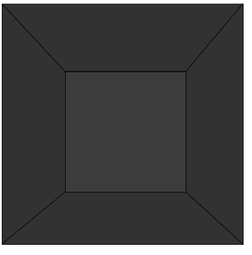

I created a ProcessingJS application that appears to rotate the inside of a cube (or the top of a pyramid, depending on how you look at it) to correspond with mouse movement.*
|  |
It works by defining the draw function to rewrite the central square to the mouse position. Since the draw function runs 60 times per second, it creates a smoother animation than running a loop every few seconds:
draw = function() {
// code to loop
};
I chose to do this project because I wanted to make something that changes according to user input. Therefore I used code that changes its output according to the mouseX and mouseY variables.
Specifically, the program works by calling the background function to clear the canvas (because otherwise the previous positions of the shapes would still appear), then calling beginShape, vertex, and endShape (the functions to create custom polygons) to create two trapezoids. This creates the lines that connect the large square to the small one:
background();
rect(0, 0, 400, 400);
// top trapezoid
beginShape();
vertex(0, 0);
for (var i=0;i<=200;i+=200){
vertex(getMouse(mouseX) + i, getMouse(mouseY));
}
vertex(400, 0);
endShape();
draw function.
for (var i=0;i<=200;i+=200){
vertex(getMouse(mouseX) + i, getMouse(mouseY));
}
vertex(getMouse(mouseX) + i, getMouse(mouseY)); part) twice: first with i being equal to 0, then with i being equal to 200, which is equivalent to running the following:
vertex(getMouse(mouseX), getMouse(mouseY));
vertex(getMouse(mouseX) + 200, getMouse(mouseY));
This project helped me understand how computer programming can be utilized in order to make art interactive and/or generative. If I had more time to work on this project, I would add a feature for the cube to change color.